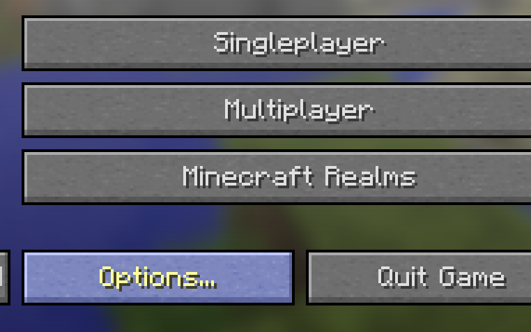
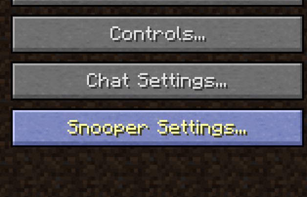
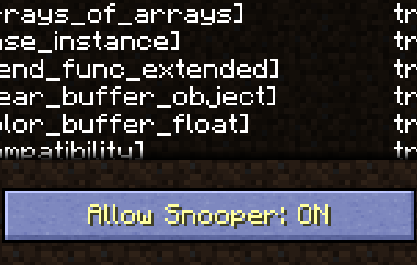
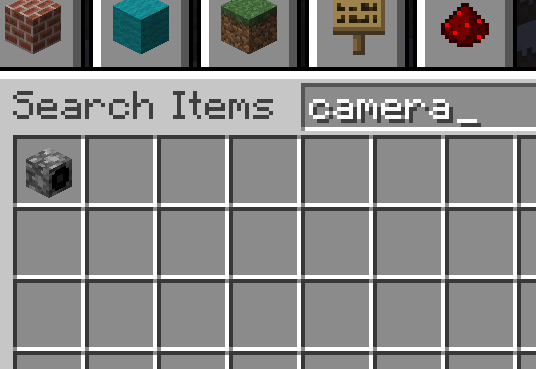
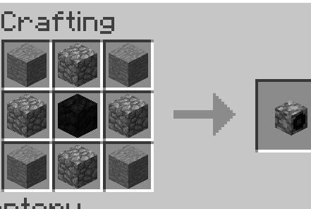

In order to see and use the block, you need to activate its presence in
the inventory.
First start Minecraft. You will see the main menu. Click on Options.

Once you're in the options menu, click on Snooper Settings.

You'll see a screen, looking something like this:
Notice the button Allow Snooper - if it's on, good, you don't have to
do anything extra before doing the important procedure.
If it's off however, turn it on, press Done and go back to the
Snooper Settings.
Now for the important procedure. Click four times on the Allow
Snooper button - it should be on when you finish clicking. Now click
Done, exit out of the Options menu, and play.
In Creative mode, go to the inventory, press the Search button and
write Camera. It should automatically find it, and you can take it and
place it wherever you want.

In Survival mode, you must craft the Camera. Go to a Crafting Table
and craft the Camera using this recipe:
For clarification, the block in the middle is the Coal Block.
You should be set! Note, this works in both Singleplayer and
Multiplayer. Upon placing the camera, the chat will tell you its ID.